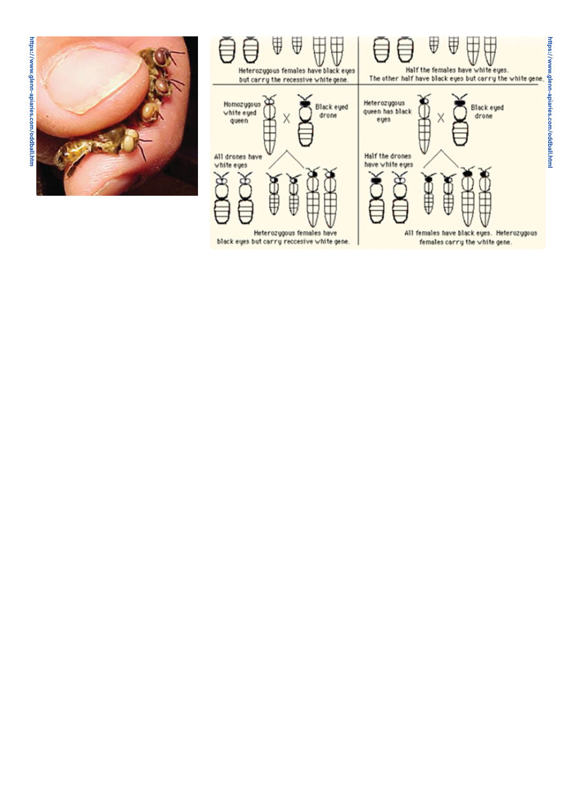

American Bee Journal
1126
unrelated queen to a single cyclops
drone failed again to establish a
line that produced the cyclops phe-
notype; none of the F1 queens pro-
duced cyclops.
There are at least 30 genetic mutant
phenotypes of honey bee.7 A pheno-
type is the specific physical appear-
ance of a given set of genes. The re-
lated word “genotype” refers to the
underlying genes but, for example, if
different genetic genotypes happen to
look the same, they make up the same
phenotype — this all sounds a lot more
neutral and scientific than in 1948
when Dr Haydak wrote,10 “Because of
the small number of these monstrosi-
ties there was no opportunity to ob-
serve their behavior. However, Eckert
(1937) reported that the monstrosities
of a similar type found in a colony in
California behaved as normal bees.”
And Eckert (1937) is itself quite simply
titled “Honeybee Monstrosities.” (If
anyone for some reason wants to write
about the early history of cycloptic
bees, this Haydak (1948) paper has a
lot of early references; apparently the
earliest is 1868 from France.)12
Anyway, of the 30 mutant pheno-
types, 20 are related to eye color, three
to eye structure (the three mentioned
in the initial blockquote of this arti-
cle), five for wings, and one for body
color.7 You’ll likely have heard of the
body color mutation, cordovan bees.
The 20 eye-color mutations “range
from almost white through various
shades of yellow, red, and brown,”7
(I don’t think “white” needs that “al-
most” caveat, I’ve seen plenty that I’d
call flat-out white,) “Drones of only
the darkest eye color, garnet, fly well
enough to mate naturally.”7 (Many
appear to be completely blind, I be-
lieve the white-eyed ones usually are).
In reference to genetic anomolies, I
myself have encountered white-eyed
drones as well as red-skinned work-
ers. These are both the result of reces-
sive genes, which are particularly apt
to exhibit themselves in drones since
they have only one set of genes.
Genetic problems might not exhibit
themselves as obviously mutant bees
but as a failure of brood to survive.
To quote the 1978 book “Abnormali-
ties and Noninfectious Diseases”:
The severity of this problem [genet-
ic problems leading to scattered or
spotty brood] has been documented
for the closed and somewhat inbred
bee population on Kangaroo Island,
South Australia.13 Scattered brood
was found in many colonies, which
didn’t become very populous. A sam-
ple of 34 colonies showed an average
brood loss of 24 per cent (range 2-47
percent), and an estimate of only six
of the 12 sex alleles present.7
While the goal of a breeding pro-
gram is usually to develop a “pure”
line from which you’ve eliminated
negative traits, if you find you’re
starting to see genetic anomalies such
as these, it’s time to bring in some
new genetics — ideally a really good
queen or even top-of-the-line “breed-
er queen” from a breeder known for
great bees, to inject good genetics into
what is evidently a shallow gene pool.
Despite research scientists seem-
ingly being able to find cycloptic bees
basement membranes” evidences the
fusion of the two eyes.4
Miller comments that “the fact that
there were so many of these speci-
mens is interesting in the light of Al-
fonsus’ statement that diligent search
failed to find a second individual in
his hive.”3 Apparently, when it does
occur, one may or may not have a few
of them. A study at my alma mater,
University of California Davis, looked
at this in 1965,8 and found:
Within the rare colonies where
it has been found, cyclops occurs
in low frequency. Lotmar9 reported
one colony with about 2 percent of
cyclops worker bees. Kerr and Laid-
law12 found about 4 percent of the
workers and drones to be cyclops in
another colony. A more recent oc-
currence of cyclops at the University
of California at Davis was a single
drone among 3598 noncyclops
drones, or 0.03 percent.
The paper looks at the questions of
how does this happen and, if one is
mad enough to try, can one breed cy-
clops bees?
The mode of inheritance of cy-
clops is not clear. That cyclops has
occurred in definite progenies with
constant proportions of workers
and drones showing the phenotype
suggests some mode of inheritance
through the eggs of the mother
queen.9 In one incidence of cyclops
(Dittrich, quoted by Lotmar9), the
capacity to produce cyclops was
passed on to a second-generation
queen. One attempt to establish a
cyclops-producing line by matings
with cyclops drones failed, even fol-
lowing a backcross of F1 queens to
cyclops drones.9 A later mating of an
Fig. 2 Drones of various eye colors, by
Tom Glenn, Glenn Apiaries
Fig. 3 From Tom Glenn, Glenn Apiaries